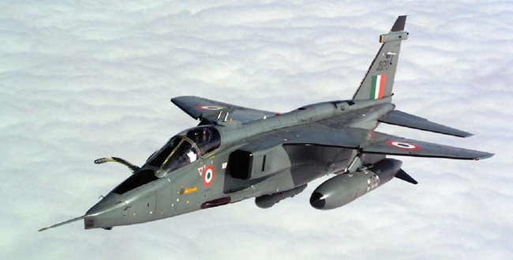

Service History
- Entry into service :
The Jaguar entered service with the Indian Air Force in 1979, initially acquired to enhance India’s strike
capabilities and later manufactured under license by Hindustan Aeronautics Limited (HAL).
- Mjaor Operation :
The Jaguar has been involved in numerous operations, including the Kargil Conflict in 1999,
where it conducted high-altitude bombing and reconnaissance missions. It was also deployed for routine border patrols and to maintain a strategic strike capability.
- Ongoing Service:
The Jaguar remains in service with the IAF, though it is undergoing phased upgrades to modernize
its avionics, targeting systems, and weaponry, with the aim of extending its operational life into the 2030s.
Technical Specifications
- Weight : Approximately 7 tons (empty weight).
- Engine : Equipped with two Rolls-Royce Turbomeca Adour Mk 804/811 turbofan engines, producing about 5,115 pounds of thrust each.
- Speed : Capable of speeds up to Mach 1.6 (1,690 km/h) at high altitude.
- Armament :
- Primary: Two 30mm DEFA cannons.
- External Hardpoints: The Jaguar can carry up to 4,750 kg of ordnance, including bombs (both conventional and precision-guided), rockets, anti-ship missiles, and air-to-ground missiles.
- Notable Feature : The Jaguar’s rugged design and terrain-following radar allow it to fly low-level missions, making it ideal for ground-attack roles.
- Range : Combat radius of approximately 850 km, extendable with drop tanks and aerial refueling.
- Crew : Typically a single-seat configuration for strike missions, with a two-seat version for training.
Historical Significance
The SEPECAT Jaguar has been essential to India’s air strike and tactical support capabilities for over four decades. Its ability to carry heavy payloads and precision-guided munitions made it ideal for missions
requiring accuracy in mountainous or defended areas. The aircraft has proven its durability and effectiveness in various peacetime and wartime roles, helping India maintain a robust deterrent capability.
Notable Missions
- Kargil Conflict (1999):The Jaguar conducted high-altitude bombing runs against enemy bunkers and positions, contributing significantly to India’s campaign in the mountainous terrain.
Its precision and ability to operate in high-stress environments proved invaluable.
- Border Surveillance and Patrol:The Jaguar has been deployed along India’s borders, providing surveillance and quick-response strike capabilities during heightened tensions with neighboring countries.
- Training and Tactical Operations:As part of its regular role, the Jaguar has participated in numerous joint exercises and training missions, preparing IAF pilots for tactical strike operations under a variety of conditions.